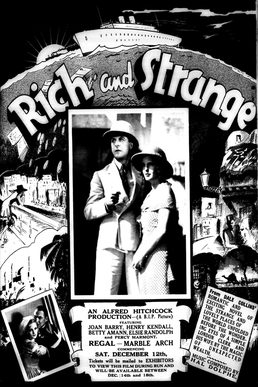

Rich and Strange
Starring: Joan Barry, Betty Amann, Percy Marmont
Director: Alfred Hitchcock
Writer: Alfred Hitchcock, Alma Reville, Val Valentine
Producer: John Maxwell
Rich and Strange, released in the United States as East of Shanghai, is a 1931 British romance film directed by Alfred Hitchcock during his time in the British film industry. The film was adapted by Hitchcock, his wife Alma Reville, and Val Valentine from the 1930 novel by Dale Collins. The title is an allusion to words of Ariel's song "Full fathom five" in Shakespeare's The Tempest.
Trivia
- The film exhibits techniques developed by Hitchcock in his later films.
- Most notable are the shipboard sets, including a recreation of a full-size ship in a water tank.
Previous Showings
3 Runs • 1 Festival
All runs on record (3):
- April 16 - 17, 1990w/ Number 17 (Number Seventeen)
- June 24 - 25, 1993w/ Number 17 (Number Seventeen)
- February 17 - 18, 2000Alfred Hitchcock Film Festivalw/ Blackmail